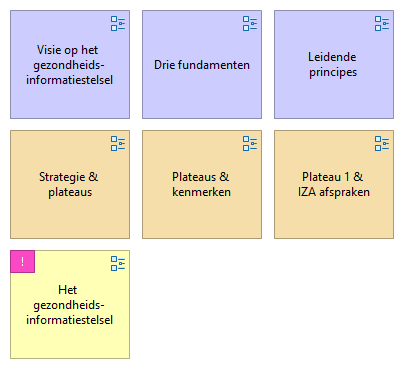

NVS - Start
(
)

https://www.rijksoverheid.nl/documenten/publicaties/2023/03/31/nationale-visie-en-strategie-gezondheidsinformatiestelsel
01. Leidende principes
Drie fundamenten
00. Het gezondheidsinformatiestelsel
01. Strategie & plateaus
Visie op het gezondheidsinformatiestelsel
02. Plateaus & kenmerken
03. Plateau 1 & IZA afspraken
Motivatie
02. Kaders